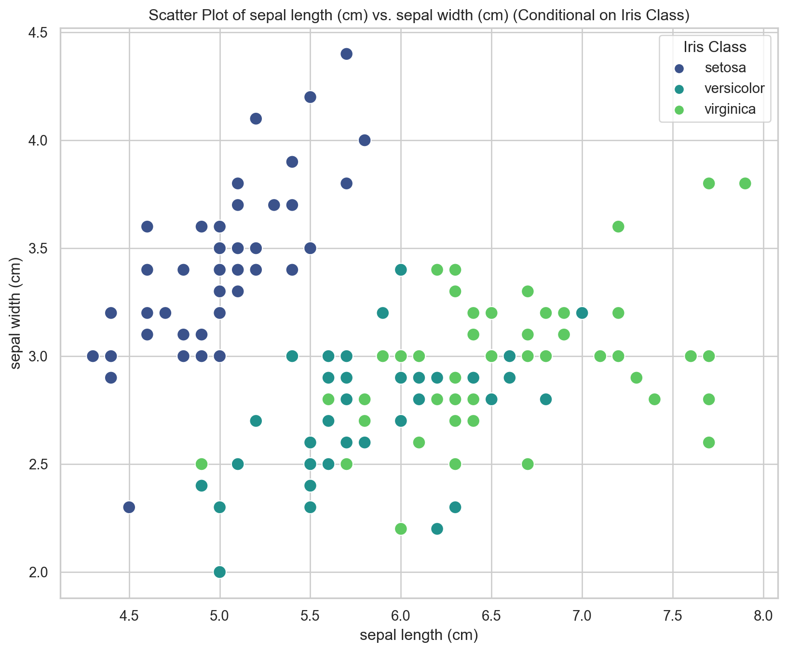
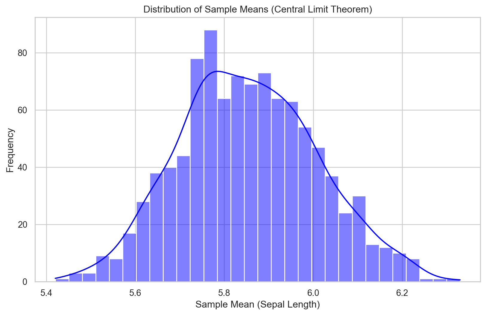

Probability is a measure quantifying the likelihood that a specific event will occur. It is a number between 0 and 1, where 0 represents the impossibility of the event happening, and 1 represents the certainty of the event occurring. Intermediate values between 0 and 1 indicate degrees of likelihood. Key concepts related to probability include sample space, event, probability of an even, complement of an event, mutually exclusive event and independent event.
What is Random Variable?
A random variable is a mathematical concept used in probability theory and statistics to describe the outcomes of a random process or experiment. It assigns a numerical value to each possible outcome of an experiment, and its values are determined by chance.
There are two types of random variables:
Discrete Random Variable:
Takes on a countable number of distinct values.
Often associated with experiments that involve counting or finite outcomes.
Examples include the number of heads in multiple coin tosses, the number of cars passing through an intersection in a given time period, or the outcome of rolling a die.
Continuous Random Variable:
Can take on an infinite number of possible values within a given range.
Often associated with measurements or observations that can take any value within a range.
Examples include the height of a person, the time it takes for a process to complete, or the temperature in a given location.
Connection Between Probability and Random Variable
Probability and random variables are closely connected concepts in probability theory and statistics. A random variable is a mathematical function that assigns a numerical value to each possible outcome of a random experiment, while probability measures the likelihood or chance associated with each of these outcomes. Events involving random variables are defined based on the outcomes they map to the probability of an event involving a random variable is calculated by summing (for discrete random variables) or integrating (for continuous random variables) the probabilities associated with the outcomes in the event. The expected value (mean) of a random variable is a measure of central tendency and is calculated as the weighted average of all possible values, where the weights are given by the probabilities. The variance and standard deviation of a random variable quantify the spread or variability of its values around the mean. Probability and random variables are fundamental concepts in probability theory and statistics, and their interplay allows for the formal modeling of uncertainty, the calculation of expected values, and the analysis of random phenomena in various fields.
Why We Need Probability and Random Variable in Machine Learning.
Probability and random variables play crucial roles in machine learning. Understanding these concepts is essential for building, training, and evaluating machine learning models. Here are some key ways in which probability and random variables are employed in machine learning:
1. Probabilistic Models:
Many machine learning models are based on probabilistic frameworks. For example, Bayesian models explicitly use probability distributions to model uncertainty in parameters and predictions.
2. Uncertainty Modeling:
Probability theory provides a natural way to represent and quantify uncertainty. In machine learning, uncertainty arises due to various factors, such as noisy data, limited information, or inherent variability. Probabilistic models help in capturing and managing this uncertainty.
3. Bayesian Inference:
Bayesian methods use probability theory to update beliefs about parameters or hypotheses based on observed data. Bayesian inference is used for parameter estimation, model selection, and making predictions in a probabilistic manner.
4. Classification and Prediction:
Many classification algorithms, such as Naive Bayes and logistic regression, are inherently probabilistic. They provide probabilities associated with class assignments, allowing for a probabilistic interpretation of predictions.
5. Regression Analysis:
In regression tasks, probability distributions can be used to model the uncertainty in predictions. Bayesian linear regression, for example, provides a distribution over possible regression lines rather than a single point estimate.
6. Ensemble Methods:
Ensemble methods, such as Random Forests and Gradient Boosting, often use randomness in the form of random sampling or random feature selection to improve model performance and generalization.
7. Monte Carlo Methods:
Monte Carlo methods, which rely on random sampling, are used for numerical integration, optimization, and simulation in machine learning. These methods are foundational in Bayesian statistics and probabilistic graphical models.
8. Deep Learning:
In deep learning, stochastic gradient descent (SGD) is a popular optimization algorithm that uses randomness in selecting batches of training data to update model parameters. Dropout, a regularization technique, also introduces randomness during training.
Lets go through some of the practical demonstration of probability theory and random variable that makes visualizaing tough statistical concepts easier.
1. Finding The Probability Density and Z-Score
Let’s use an example with the well-known Iris dataset, which is often used in machine learning. We’ll create a probability distribution plot (histogram) for one of the features in the Iris dataset using Python and the Seaborn library. Seaborn is built on top of Matplotlib and provides a high-level interface for drawing attractive statistical graphics. Then also plot the Z-score, also known as the standard score, is a measure of how many standard deviations a data point is from the mean of a dataset. It is a dimensionless quantity and is expressed in terms of standard deviations.
import seaborn as snsimport matplotlib.pyplot as pltimport numpy as npfrom sklearn import datasets# Load the Iris datasetiris = datasets.load_iris()data = iris.datafeature_names = iris.feature_names# Select a feature for the probability distribution plot and Z-score calculation (e.g., sepal length)selected_feature_index =0selected_feature_name = feature_names[selected_feature_index]selected_feature_data = data[:, selected_feature_index]# Calculate the Z-scoremean_value = np.mean(selected_feature_data)std_dev = np.std(selected_feature_data)z_scores = (selected_feature_data - mean_value) / std_dev# Create a probability distribution plot (histogram) with Z-score markersplt.figure(figsize=(10, 6))# Probability Distribution Plotsns.histplot(selected_feature_data, kde=True, color='blue', bins=20, label='Probability Distribution')# Z-score Markersplt.axvline(mean_value, color='red', linestyle='dashed', linewidth=2, label='Mean')plt.axvline(mean_value + std_dev, color='green', linestyle='dashed', linewidth=2, label='Mean + 1 Std Dev')plt.axvline(mean_value - std_dev, color='green', linestyle='dashed', linewidth=2, label='Mean - 1 Std Dev')plt.title(f'Probability Distribution Plot and Z-scores of {selected_feature_name}')plt.xlabel(selected_feature_name)plt.ylabel('Probability Density')plt.legend()plt.show()# Display the Z-scoresprint(f'Z-scores for {selected_feature_name}:\n{z_scores}')
To illustrate conditional probability using the Iris dataset, let’s create a scatter plot that shows the relationship between two features (e.g., sepal length and sepal width) for a specific class of flowers. We’ll use the Seaborn library for data visualization. Below is an example code that generates a scatter plot for sepal length vs. sepal width, conditioned on the Iris class.
import seaborn as snsimport matplotlib.pyplot as pltfrom sklearn import datasets# Load the Iris datasetiris = datasets.load_iris()data = iris.datatarget_names = iris.target_names# Create a DataFrame for easy plotting using Seabornimport pandas as pddf = pd.DataFrame(data, columns=iris.feature_names)df['class'] = [target_names[i] for i in iris.target]# Choose two features for the scatter plot (e.g., sepal length and sepal width)feature1 ='sepal length (cm)'feature2 ='sepal width (cm)'# Set the style of the plotsns.set(style="whitegrid")# Create a scatter plot conditioned on the Iris classplt.figure(figsize=(10, 8))sns.scatterplot(x=feature1, y=feature2, hue='class', data=df, palette='viridis', s=100)# Set plot labels and titleplt.title(f'Scatter Plot of {feature1} vs. {feature2} (Conditional on Iris Class)')plt.xlabel(feature1)plt.ylabel(feature2)# Show the legendplt.legend(title='Iris Class')# Show the plotplt.show()

In this example, the scatter plot visualizes the relationship between sepal length and sepal width for each Iris class. Each point represents an individual flower, and the points are color-coded based on their class. This provides a conditional view of the data, showing how the two features vary within each class.
You can customize the code by changing the values of feature1 and feature2 to explore other combinations of features in the dataset. Adjust the Seaborn settings and plot parameters according to your preferences.
3. Central Limit Theorem
The Central Limit Theorem (CLT) states that, under certain conditions, the distribution of the sum (or average) of a large number of independent, identically distributed random variables approaches a normal (Gaussian) distribution, regardless of the original distribution. This theorem has significant implications for statistical inference. In the context of the Iris dataset example, we can demonstrate the Central Limit Theorem by considering the distribution of sample means for a specific feature. Let’s create a plot that illustrates the CLT using the sepal length feature.
import seaborn as snsimport matplotlib.pyplot as pltimport numpy as npfrom sklearn import datasets# Load the Iris datasetiris = datasets.load_iris()sepal_length = iris.data[:, 0]# Number of samples to draw for each meansample_size =30# Number of means to calculatenum_means =1000# Generate means from random samplesmeans = [np.mean(np.random.choice(sepal_length, size=sample_size)) for _ inrange(num_means)]# Set the style of the plotsns.set(style="whitegrid")# Create a histogram of sample meansplt.figure(figsize=(10, 6))sns.histplot(means, kde=True, color='blue', bins=30)# Set plot labels and titleplt.title('Distribution of Sample Means (Central Limit Theorem)')plt.xlabel('Sample Mean (Sepal Length)')plt.ylabel('Frequency')# Show the plotplt.show()

In this example, we randomly draw samples of sepal length and calculate the means of these samples. The resulting distribution of sample means is then visualized using a histogram. According to the Central Limit Theorem, this distribution of sample means should approach a normal distribution, regardless of the original distribution of sepal length.
You can experiment with different sample sizes (sample_size) and the number of means to calculate (num_means) to observe how the distribution of sample means becomes more normal as the sample size increases, in accordance with the Central Limit Theorem.